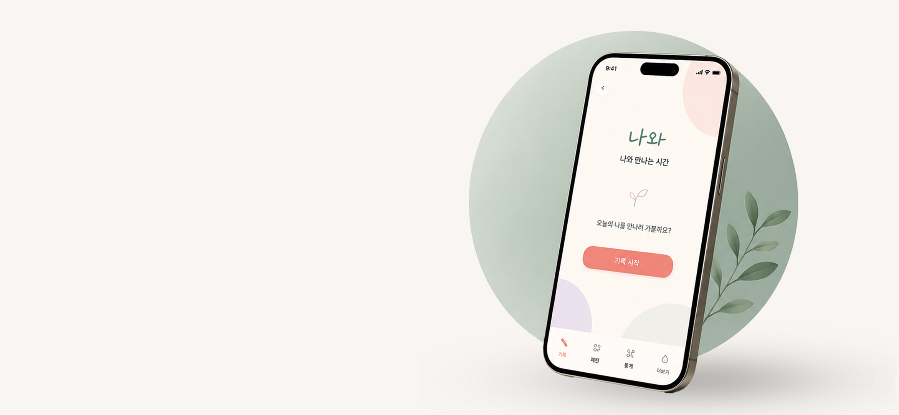
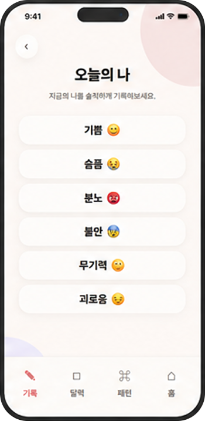
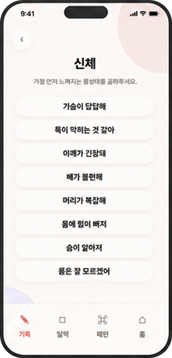
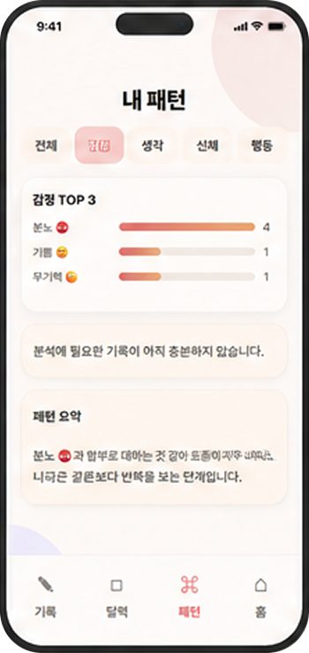
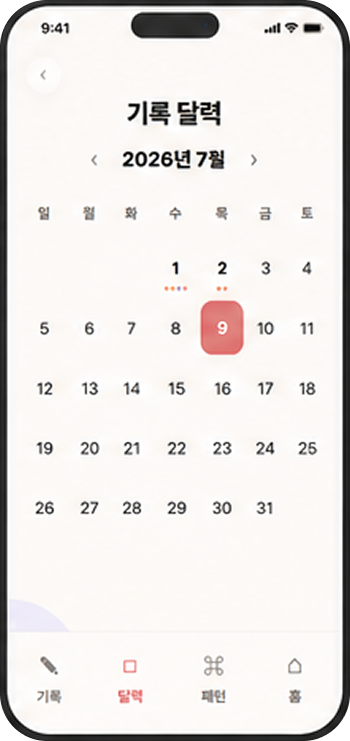
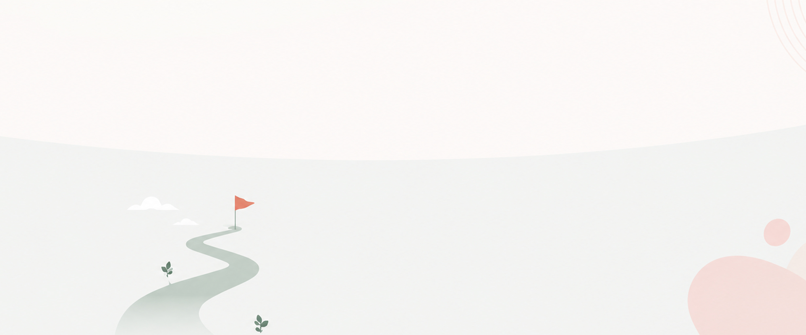

클릭만으로!
클릭만으로!
클릭만으로!
공감 되는 문장
마음을 담는 표현
쉽고 빠른 선택


반복되는 기록
나만의 통계
나를 발견
기록 보관
다시 보기
언제든 확인

나와를 시작하기 전에 많이 궁금해하는 내용을 모았어요.
질문을 선택하면 답변을 확인할 수 있어요.
질문을 눌러 확인해 보세요.
기록이 조금씩 쌓이면 반복해서 선택한 감정과 문장을 바탕으로 나의 흐름과 패턴을 확인할 수 있어요.
기록이 조금씩 쌓이면 반복해서 선택한 감정과 문장을 바탕으로 나의 흐름과 패턴을 확인할 수 있어요.
기록이 조금씩 쌓이면 반복해서 선택한 감정과 문장을 바탕으로 나의 흐름과 패턴을 확인할 수 있어요.
기록이 조금씩 쌓이면 반복해서 선택한 감정과 문장을 바탕으로 나의 흐름과 패턴을 확인할 수 있어요.
기록이 조금씩 쌓이면 반복해서 선택한 감정과 문장을 바탕으로 나의 흐름과 패턴을 확인할 수 있어요.
